先生用 1週間の時間割
11月9日（月）〜11月13日（金）。1日ごとの時間割とタスク（朝・授業中に記録・放課後）、校時ごとの本時と板書・ノートです。算数と社会の板書・ノートは、教科書の問題などが入るので手元のPDFだけに入れています。
先生用 1週間の時間割 11月9日（月）〜11月13日（金）
1日ごとに「その日の時間割とタスク」のページがあり、続けて校時ごとに本時と板書・ノートが並びます。理科は全5時間に組み直し、今週は第2〜5時です。
| 11月9日（月） 下校 15:50 | 11月10日（火） 委員会活動のため5時間授業。下校 15:00 | 11月11日（水） 6校時は代表委員会。下校 15:20 | 11月12日（木） 下校 15:00 | 11月13日（金） 秋の遠足（4時間）。下校 13:30 | |
|---|---|---|---|---|---|
| 1 | 国語 「和と洋新聞」発表の準備（発表メモと練習） | 国語 「和と洋新聞」グループ発表会（2回まわす） | 国語 「和と洋新聞」全体の前で発表（グループから1人ずつ） | 国語 「和と洋新聞」単元のふりかえり（第7時） | 秋の遠足 水筒・リュック・ハンカチ・お手ふき・しき物・お菓子・ティッシュ・ごみ袋。赤白ぼうし |
| 2 | 社会 地域で受けつがれてきたもの 第8時 ほかの祭りや行事の始まり | 理科 とじこめた空気と水 第3時 空気をまとめて、「では水は？」を立てる | 理科 とじこめた空気と水 第4時 水をおして調べる（理科室） | 理科 とじこめた空気と水 第5時 空気と水をくらべてまとめる | |
| 3 | 算数 がい数とその計算 第3時 がい数の表すはんい | 算数 がい数とその計算 第4時 がい数でぼうグラフ | 算数 がい数とその計算 第5時 和や差の見積もり | 算数 がい数とその計算 第6時 積の見積もり | |
| 4 | 体育 ネット型ゲーム キャッチバレー | 社会 地域で受けつがれてきたもの まとめと単元テスト | 総合 安心・安全なまちづくり チームで調べる・つくる | 図工 言葉から感じて | |
| 5 | 理科 とじこめた空気と水 第2時 予想して、空気をおしてたしかめる（理科室） | 体育 ネット型ゲーム キャッチバレー | 総合 安心・安全なまちづくり チームで調べる・つくる | 図工 言葉から感じて | |
| 6 | 学活 係活動 | 代表委員会 |
11月9日（月）
下校 15:50| 1 | 国語 「和と洋新聞」発表の準備（発表メモと練習） |
|---|---|
| 2 | 社会 地域で受けつがれてきたもの 第8時 ほかの祭りや行事の始まり |
| 3 | 算数 がい数とその計算 第3時 がい数の表すはんい |
| 4 | 体育 ネット型ゲーム キャッチバレー |
| 5 | 理科 とじこめた空気と水 第2時 予想して、空気をおしてたしかめる（理科室） |
| 6 | 学活 係活動 |
朝のうちに
- □ 理科：注射器（各班2本と予備）のピストンが動くか、1本ずつ確かめる。ゴム板を各班1枚
- □ 理科：理科室（5校時）を確かめる。A3の掲示（問題・安全・調べ方・わけのカード・はんの結果の表・ことば）を持っていく
- □ 国語：4人グループの組み分けを決める。発表メモと聞きとりカードを配れるようにする
- □ 社会：第8時の班の資料4種（班の数）、くらべる表、英彦山神宮の家庭学習カード
授業中に記録すること
- □ 理科 第2時 ◎知・技：名簿に3点（先を人に向けない・目もりの数・手ごたえの言葉）
- □ 社会 第8時 思：2つ以上の祭りをくらべて、共通する願いを書いているか（ノート）
放課後・その日のうちに
- □ 理科：第3時の配る紙を印刷。まとめカード（空気）と問題カード（水）を用意。水を入れた注射器を1本
- □ 理科：はんの結果の表（マグネット）を消さずに残す。実験セットを1組、教室の後ろに残す
- □ 社会：単元テストを印刷する。付せん2色（青・黄）
- □ 体育：ゲーム大会の対戦表を作る
- □ 休んだ子の机に、おいつきカード（理科・国語・算数・社会）を入れる
国語 発表の準備をする
11月9日（月） 1校時 発表会 1／4
新聞の中からいちばん伝えたい記事を選び、材料を選んだわけが伝わるように発表メモを作る。
| 0〜5分 | 発表会の見通しをもつ。火曜はグループで2回、水曜は全体の前で発表すること。聞く人に伝えるのは「くらべたこと」と「材料を選んだわけ」の2つであることを伝える。 |
| 5〜20分 | 発表メモを書く。発表メモの①〜⑤を書く。いちばん伝えたい記事、何と何を何でくらべたか（じょうほうのとびらの観点）、材料を選んだわけ、聞く人へのしつもん。 |
| 20〜35分 | ペアで練習する。1人2分で話す。聞いた人は「くらべたことが分かったか」「わけが分かったか」に○をつけて返す。交代してもう1回。 |
| 35〜43分 | 聞き方の約束を確かめる。聞きとりカードの書き方を確かめる。グループ分けを発表する（4人グループ）。 |
| 43〜45分 | ふりかえり。練習して直したところを1つ書く。 |
評価 材料を選んだわけを、発表メモに書いている（記述）。
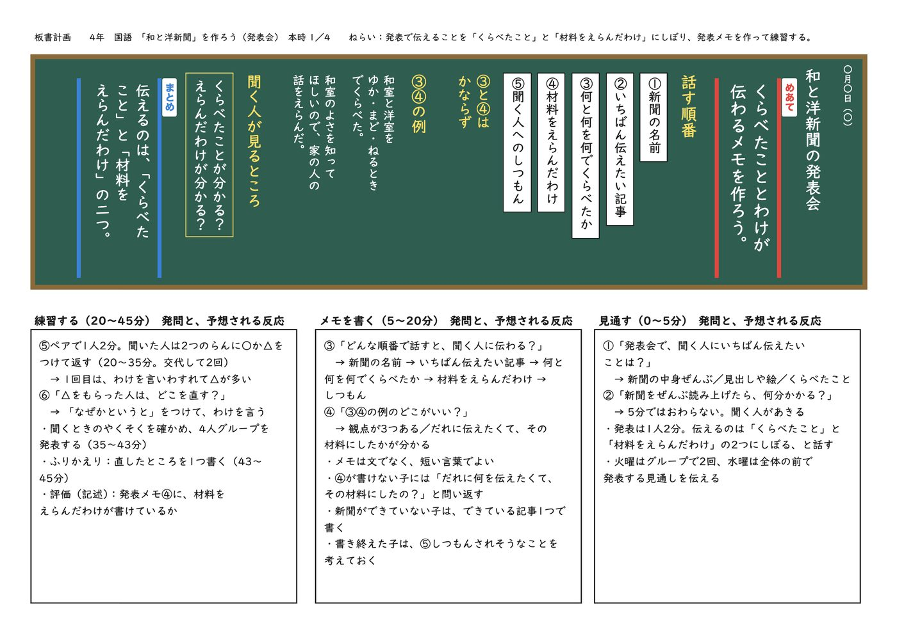
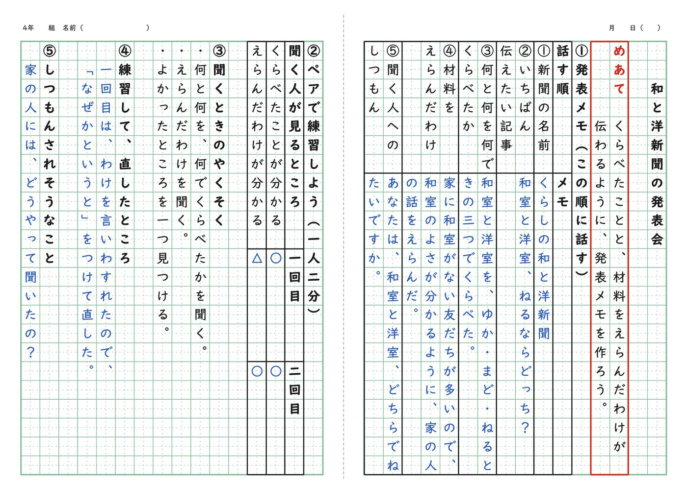
社会 ほかの祭りや行事の始まり
11月9日（月） 2校時 第8時
ほかの祭りや行事の始まりを班で調べて表にまとめ、祭りや行事には人々の願いがこめられていることを考える。
| つかむ（5分） | 飯塚山笠の始まりの願いをふり返る。「ほかの祭りも同じでしょうか」でめあてを立てる。 |
| 調べる（17分） | 4つの班で、博多祇園山笠、玉せせり、川渡り神幸祭、あしや花火大会の資料を読み、くらべる表の1行をうめる。分からないことは「分からなかった」と書く。 |
| くらべる（15分） | 班の表を黒板の大きな表に集め、共通点を見つける。「病気や災いをはらう」「実り」「町を元気に」の3つの見出しでまとめる。 |
| まとめる（8分） | まとめとふりかえり。英彦山神宮の家庭学習カードを配る（調べなくてもよい）。 |
評価 2つ以上の祭りをくらべて、共通する願いを書いている（思考・判断・表現。ノート）。
つまずきと手立て 言い伝えを事実として書く。「〜といわれる」と書くことを、資料を読む前に伝える。
ノートのお手本は、教科書の問題などが入るので手元のPDFで見ます。
算数 がい数の表すはんい
11月9日（月） 3校時 第3時
以上・未満・以下の意味を知り、がい数のもとの数のはんいを表す。
| はじめ（8分） | 「約500」の本当の数を予想させ、「500になる数はどこからどこまで？」と問う。 |
| 考える（25分） | 数直線で、500になる数に色をぬる。550は入るか。以上・未満・以下のことばを知る。 |
| まとめる（12分） | まとめ（2通りの言い方）。練習、○つけクイズ、ふりかえり。 |
評価 以上・未満・以下を使って、もとの数のはんいを表している（ノート）。
つまずきと手立て 550が入るかどうかで迷う。数直線に●と○をかいて区別させる。言葉の説明だけでは定着しない。
板書計画は、教科書の問題などが入るので手元のPDFで見ます。
ノートの記入例は、教科書の問題などが入るので手元のPDFで見ます。
体育 記録をとってくらべよう
11月9日（月） 4校時 第6時（推定）
ゲームの記録をとり、前の記録とくらべて、チームの作戦を見直す。
| 準備（10分） | 場の準備5分、準備運動5分。 |
| 練習（8分） | チームで練習。 |
| 試合（20分） | ゲーム → 作戦タイム3分 → 2回目のゲーム。タブレットの「とくてん板」で記録する。 |
| ふりかえり（7分） | 記録をくらべ、ふりかえりカードを書く。片づけ。 |
評価 記録をもとに、チームの作戦を考えている（ふりかえりカード）。
つまずきと手立て 記録をつけることに追われて試合が止まる。記録係は交代制にし、つけ方の動画（03_記録のつけ方）を先に見せる。
板書計画とノートはありません（体育・学活など）。
理科 予想して、空気をおしてたしかめる
11月9日（月） 5校時 第2時（全5時間） 理科室
空気でっぽうの体験をもとに根拠のある予想をもち、注射器を安全に正しく使って、とじこめた空気をおしたときの体積と手ごたえの変わり方を調べて記録する。
| 0〜3分 | 前の時間をふり返り、問題を確かめる。問題カードを黒板の左にはる。 |
| 3〜13分 | 予想と、そう思うわけを書く。ノートの表に○をつけ、わけを3分で書く。 |
| 13〜21分 | 調べ方を考え、安全の約束を確かめる。注射器は、子どもが困ってから出す。先に見せない。 |
| 21〜36分 | 注射器で空気をおして、記録する。2人1組で、おす人と目もりを読む人に分かれる。5分で交代し、全員が手ごたえを体験する。 |
| 36〜43分 | はんの結果を集める。黒板には事実だけを書く。考察はまだ書かない（次の時間のはじめに書く）。 |
| 43〜45分 | ふりかえり。実験セットを1組、教室の後ろに残す。休んだ子が次の朝に1回おせるようにする。 |
評価 知・技◎：注射器を安全に正しく扱い、目もりの数と手ごたえの言葉の両方を記録している（行動観察・ノート）。名簿で3点を見ます。先を人に向けていないか、目もりの数を書いたか、手ごたえを言葉で書いたか。
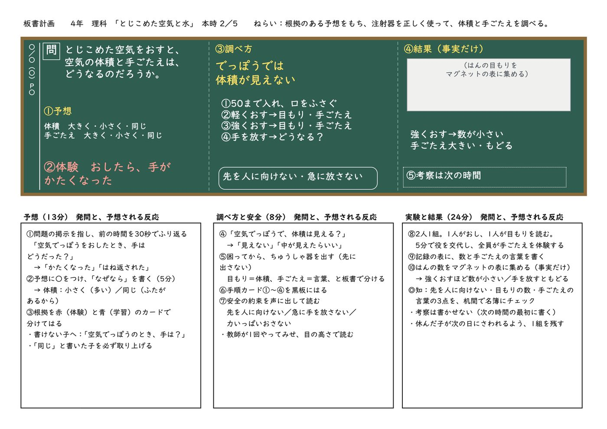
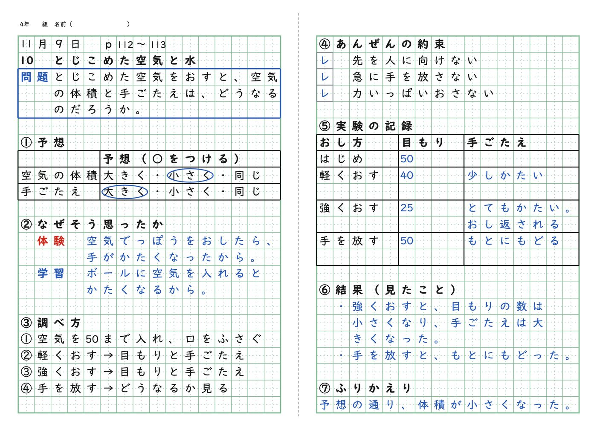
11月10日（火）
委員会活動のため5時間授業。下校 15:00| 1 | 国語 「和と洋新聞」グループ発表会（2回まわす） |
|---|---|
| 2 | 理科 とじこめた空気と水 第3時 空気をまとめて、「では水は？」を立てる |
| 3 | 算数 がい数とその計算 第4時 がい数でぼうグラフ |
| 4 | 社会 地域で受けつがれてきたもの まとめと単元テスト |
| 5 | 体育 ネット型ゲーム キャッチバレー |
朝のうちに
- □ 理科：前の時間の結果の表を黒板に出す。水を入れた注射器を1本、教卓の下に
- □ 社会：学びの足跡の掲示（第2〜8時）がそろっているか確かめる
授業中に記録すること
- □ 理科 第3時 ◎知・技：考察とまとめで、体積と手ごたえの両方を書いているか（ノート）
- □ 社会：単元テストを回収する
- □ 国語 グループ発表：材料を選んだわけを話しているか（名簿に○）
放課後・その日のうちに
- □ 理科：第4時（水の実験）の用意。トレーとぞうきん（各班1組）、ビーカーか水そう（2つ）、配る紙。理科室（水曜2校時）を確かめる
- □ 社会：単元テストの採点
- □ 総合：各チームの計画表の書き込みを見ておく
- □ 休んだ子の机に、おいつきカード（理科・国語・算数・社会）を入れる
国語 グループで発表する（2回まわす）
11月10日（火） 1校時 発表会 2／4
聞く人に伝わるように、くらべたことと材料を選んだわけを話し、友だちの新聞のよさを見つける。
| 0〜5分 | めあてと順番を確かめる。1人の持ち時間は、発表2分と質問1分。 |
| 5〜20分 | 1回目のグループ発表。4人グループで1人ずつ発表する。聞く人は聞きとりカードに書く。 |
| 20〜25分 | メンバーを入れかえる。グループの半分が別のグループへ動く。1回目の質問をもとに、話し方を1つ直す。 |
| 25〜40分 | 2回目のグループ発表。新しいメンバーにもう一度発表する。2回目のほうがうまくいく子が多い。 |
| 40〜45分 | 全体の前で発表する人を決める。グループで「この人の新聞をみんなに聞いてほしい」を1人選ぶ。選んだわけも一言書く。 |
評価 材料を選んだわけを話している（観察。名簿に○）。
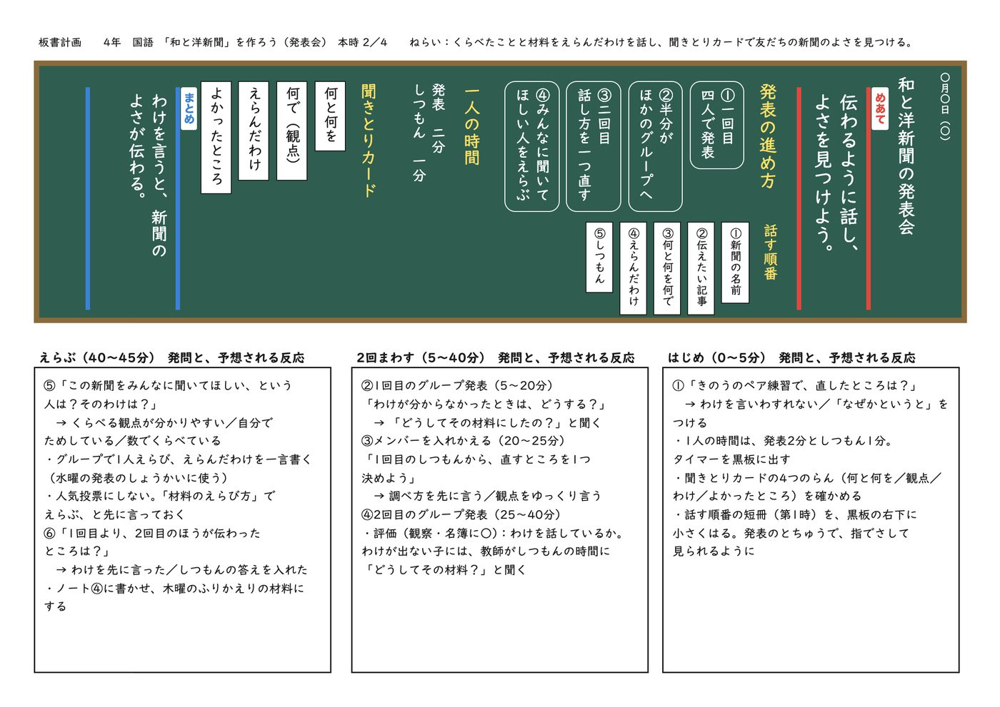
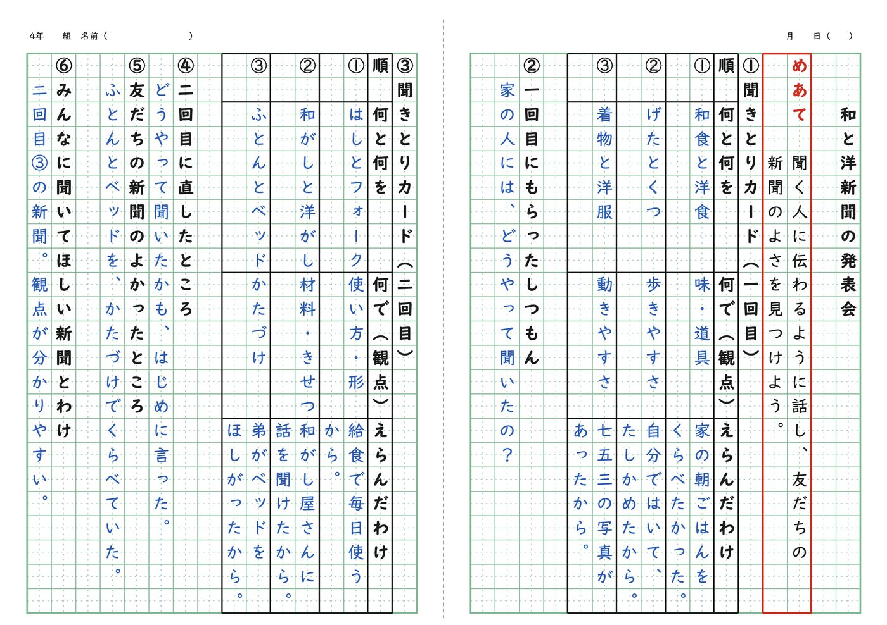
理科 空気をまとめて、「では水は？」を立てる
11月10日（火） 2校時 第3時（全5時間） 教室
空気の結果から、とじこめた空気はおすと体積が小さくなり、おし返す力が大きくなることをとらえる。空気の学習をもとに、水についての問題を自分たちで立て、根拠のある予想と調べ方をもつ。
| 0〜3分 | 前の時間の結果を見る。前の時間の表をそのまま見せる。 |
| 3〜17分 | 空気の考察を書き、まとめる。考察の型で書く（7分）。強くおすと、体積は（ ）なった。手ごたえは（ ）なった。だから… |
| 17〜27分 | 次の問題を立てる。教師は「水」と言わない。ここに時間をかける。 |
| 27〜40分 | 水の予想を書き、話し合う。ノートの表に○をつけ、わけを書く（6分）。 |
| 40〜45分 | 調べ方を決める。空気と同じ手順にそろえることを確かめる（条件をそろえる）。 |
評価 知・技◎：とじこめた空気はおすと体積が小さくなり、おし返す力が大きくなることを、体積と手ごたえの両方を使って書いている（ノートの考察とまとめ）／思見取り：空気の学習や生活経験をもとに、水についての予想を根拠をつけて書いている（ノート。12/4の研究授業の評価の練習）
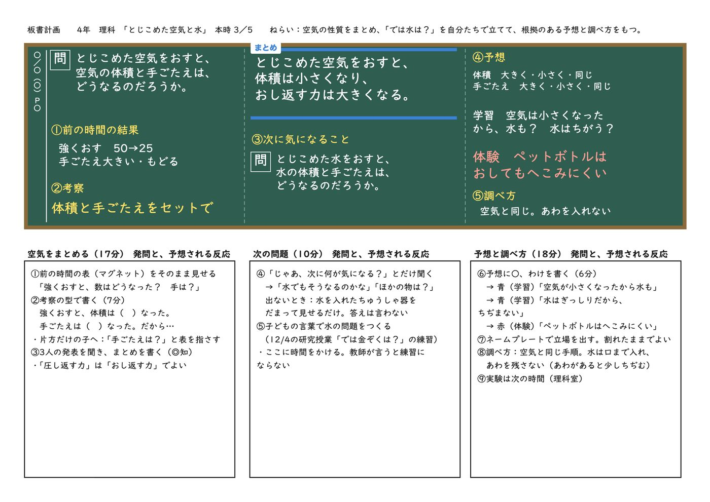
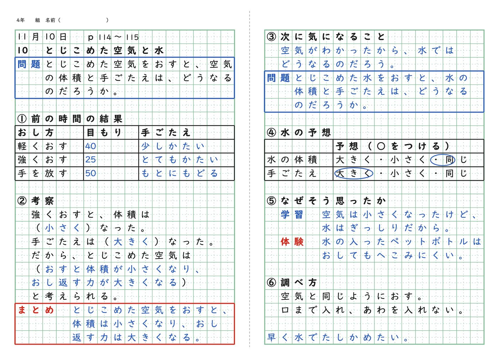
算数 がい数を使ってぼうグラフ
11月10日（火） 3校時 第4時
1目もりの大きさに合わせてがい数にし、ぼうグラフに表す。身の回りのがい数をさがす。
| はじめ（8分） | 表をそのままグラフにかけるかを問う。「1目もりの大きさなら、どの位までのがい数にする？」 |
| 考える（25分） | 一万の位までのがい数にしてぼうグラフをかく。がい数にしてよかったことを話し合う。 |
| まとめる（12分） | まとめ。身の回りのがい数さがし（ニュース、チラシ、山の高さ）。 |
評価 1目もりの大きさに合わせてがい数にし、グラフに表している（ノート）。
つまずきと手立て 四捨五入する位を、1目もりの大きさから決められない。「1目もりより1つ下の位を見る」と言葉にさせる。
板書計画は、教科書の問題などが入るので手元のPDFで見ます。
ノートの記入例は、教科書の問題などが入るので手元のPDFで見ます。
社会 学習問題のまとめと単元テスト
11月10日（火） 4校時 第9時
調べたことを「何のために」と「なぜ参加するのか」の2つに整理し、学習問題に対する自分の考えをまとめる。
| 整理する（10分） | 学びの足跡を順に指しながら、「何のために」と「なぜ参加するのか」の2列を口頭で整理する。付せんは青と黄の2色。 |
| 書く（5分） | 学習問題の答えを、2つを両方入れて1〜2文で書く。 |
| 単元テスト（30分） | 単元テストを行う。答えの文はテストのあとに回収してもよい。 |
評価 答えの文に、調べた事実が1つ以上入っている（思考・判断・表現。ノート）。
つまずきと手立て 書き出しが決まらない。「祭りや行事は〜ために始まった。みんなが参加するのは〜からだと思う。」の形を示す。
ノートのお手本は、教科書の問題などが入るので手元のPDFで見ます。
体育 ゲーム大会を楽しもう
11月10日（火） 5校時 第7時（推定）
これまでの作戦を生かして、ゲーム大会を楽しむ。
| 準備（10分） | 場の準備、準備運動。対戦表を確かめる。 |
| ゲーム大会（28分） | 対戦表にそって試合。作戦タイムを入れる。 |
| ふりかえり（7分） | 単元のふりかえりカード。片づけ。 |
評価 作戦を生かして、進んでゲームに取り組んでいる。
つまずきと手立て 勝ち負けでもめる。始める前に、ルールと「よかったプレーを言う」約束を確かめる。
板書計画とノートはありません（体育・学活など）。
11月11日（水）
6校時は代表委員会。下校 15:20| 1 | 国語 「和と洋新聞」全体の前で発表（グループから1人ずつ） |
|---|---|
| 2 | 理科 とじこめた空気と水 第4時 水をおして調べる（理科室） |
| 3 | 算数 がい数とその計算 第5時 和や差の見積もり |
| 4 | 総合 安心・安全なまちづくり チームで調べる・つくる |
| 5 | 総合 安心・安全なまちづくり チームで調べる・つくる |
| 6 | 代表委員会 |
朝のうちに
- □ 理科：トレーとぞうきん、水を理科室へ。前の時間のネームプレート（予想）を持っていく
- □ 総合：チームごとの計画表を開ける状態にしておく
授業中に記録すること
- □ 理科 第4時 知・技：注射器を安全に扱い、記録しているか（行動観察）。態：力を変えてくり返す子をメモ
- □ 国語 全体発表：まねしたい材料の選び方を書いているか（ノート）
- □ 総合：計画表に「やったこと」「次にやること」が書けているか
放課後・その日のうちに
- □ 理科：第5時の配る紙、くらべる表（A3）、まとめカード（空気と水）、ボール・うき輪・水でっぽう・空気入れ
- □ 理科：学びの足跡（A2、2まい）を教室の横にはる
- □ 国語：ふりかえりシートを印刷する
- □ 図工：画用紙・コンテ・パステル・新聞紙と、乾かす場所
- □ 休んだ子の机に、おいつきカード（理科・国語・算数・総合）を入れる
国語 全体の前で発表し、よさを伝え合う
11月11日（水） 1校時 発表会 3／4
グループから選ばれた友だちの発表を聞き、材料の選び方や整理のしかたのよさを見つける。
| 0〜3分 | めあてを確かめる。選ばれた8人が発表すること、聞く人は「材料の選び方」に注目することを伝える。 |
| 3〜35分 | 8人が発表する。1人2分と、選んだグループからの一言。教師は、くらべた観点を板書に集める（色・材料・使い方など）。 |
| 35〜45分 | よさを伝え合う。板書の観点を見ながら、「まねしたい材料の選び方」を1つ書く。新聞は教室の後ろにはり、休み時間に読めるようにする。 |
評価 友だちの材料の選び方のよさを書いている（記述）。
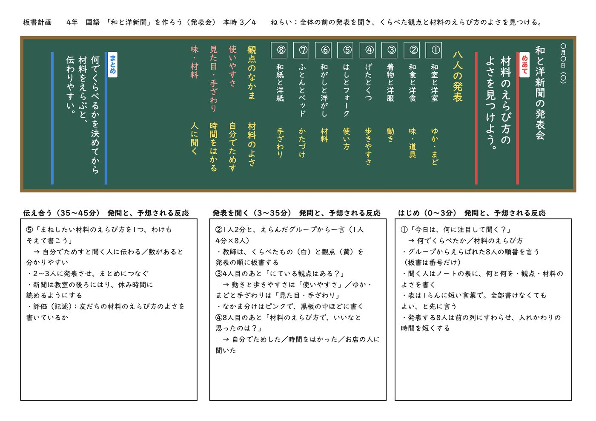
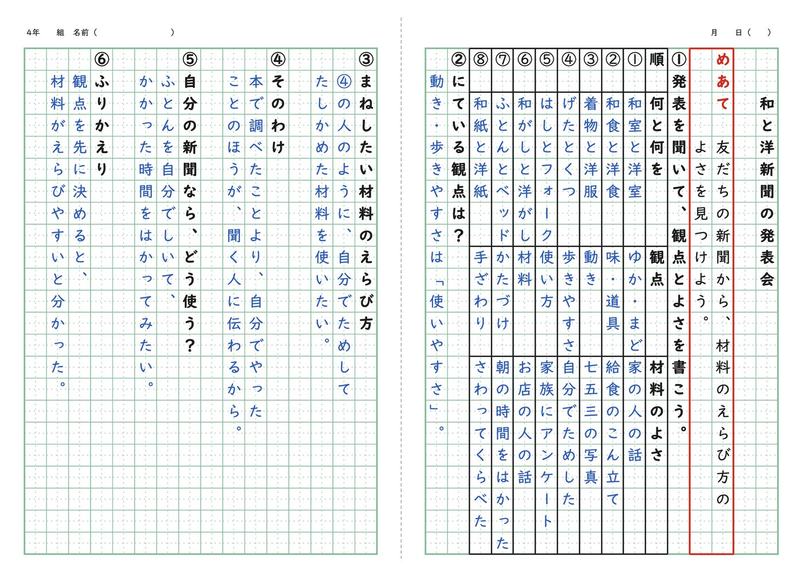
理科 水をおして調べる
11月11日（水） 2校時 第4時（全5時間） 理科室
注射器を安全に正しく使って、とじこめた水をおしたときの体積と手ごたえの変わり方を調べ、記録する。
| 0〜5分 | 予想を確かめる。前の時間のネームプレートをそのまま見せる。 |
| 5〜10分 | 安全の約束と手順。トレーとぞうきんを先に配る。 |
| 10〜32分 | 水をおして調べる。水は口まで入れ、あわを残さない（あわがあると少しちぢみ、「水もちぢんだ」と見まちがえる）。 |
| 32〜42分 | はんの結果を集め、結果を書く。結果は事実だけを書く。 |
| 42〜45分 | 片づけ。水はトレーごと流しへ。 |
評価 知・技◎：注射器を安全に扱い、目もりの数と手ごたえの言葉を記録している（行動観察・ノート）／態見取り：力の強さを変えて、くり返し調べようとしている（行動観察。名簿にメモ）
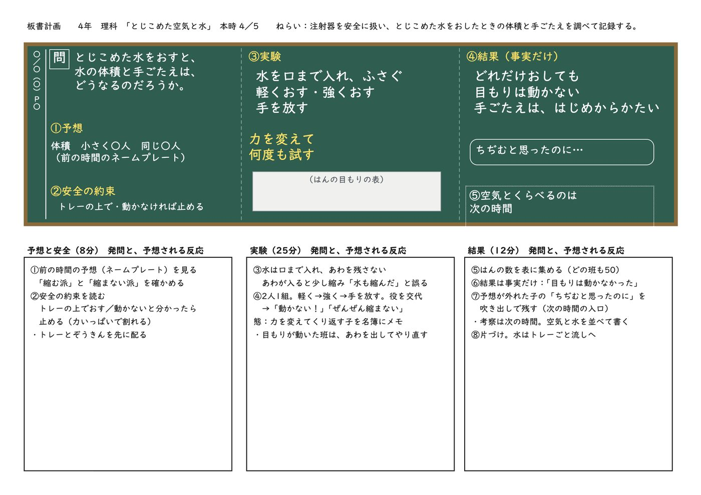
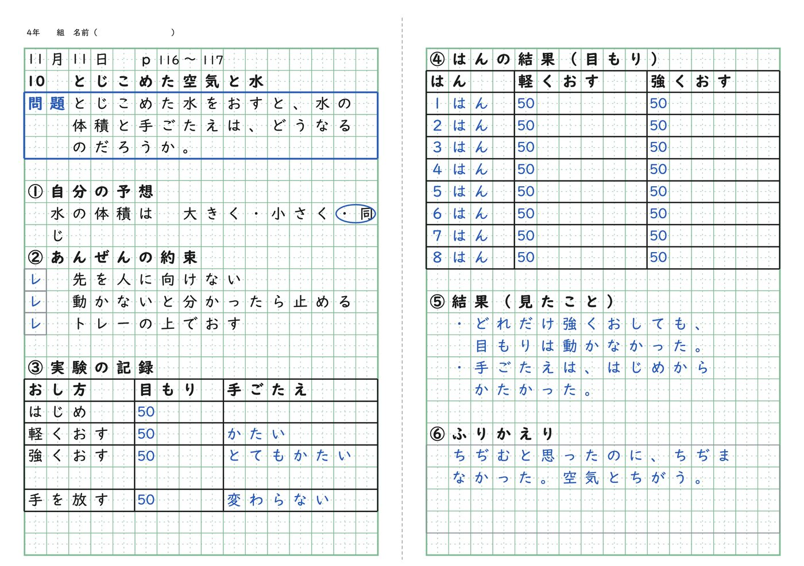
算数 和や差の見積もり
11月11日（水） 3校時 第5時
和や差をがい数で求めるときは、先にがい数にしてから計算すればよいことに気づく。
| はじめ（8分） | 「あわせた数は約何百何十万？」と問い、めあてを立てる。 |
| 考える（25分） | 「計算してからがい数」と「がい数にしてから計算」の2つの考えをくらべる。どちらが楽か。 |
| まとめる（12分） | まとめと「がい算」のことば。練習。 |
評価 和や差を、先にがい数にしてから見積もっている（ノート・練習）。
つまずきと手立て 細かく計算してからがい数にしてしまう。答えが同じになることを確かめてから、楽なほうを選ばせる。
板書計画は、教科書の問題などが入るので手元のPDFで見ます。
ノートの記入例は、教科書の問題などが入るので手元のPDFで見ます。
総合 チームで調べる・つくる
11月11日（水） 4・5校時 調べる・つくる（2時間）
チームの計画表をもとに、自分たちの困りごとについて調べたり、つくったりして、次にやることを決める。
| はじめ（4校時の10分） | チームごとに計画表を開き、今日の2時間でやることを2つ決める。12/2の中間発表までの残りを確かめる。 |
| 調べる・つくる（4校時35分＋5校時30分） | アンケートの用意、聞き取りの準備、チェック表や地図の試作など、チームの計画どおりに進める。途中で1回、チームの間で見せ合う。 |
| 記録する（5校時の15分） | 計画表に「やったこと」と「次にやること」を書く。先生は各チームの計画表を見て、一言コメントを返す。 |
評価 計画表に、毎週の書き込みが続いている（主体的に学習に取り組む態度）。
つまずきと手立て チームで話が止まる。計画表の「次にやること」を1つだけ読み上げてから動かす。
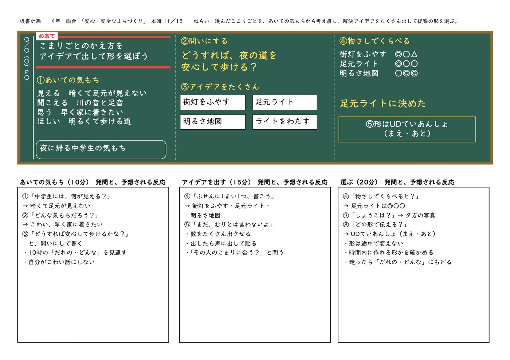
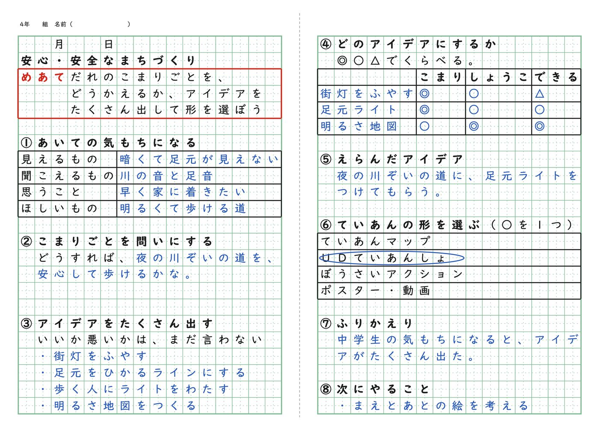
11月12日（木）
下校 15:00| 1 | 国語 「和と洋新聞」単元のふりかえり（第7時） |
|---|---|
| 2 | 理科 とじこめた空気と水 第5時 空気と水をくらべてまとめる |
| 3 | 算数 がい数とその計算 第6時 積の見積もり |
| 4 | 図工 言葉から感じて |
| 5 | 図工 言葉から感じて |
朝のうちに
- □ 理科：くらべる表と身の回りの物を教室へ
- □ 図工：材料と乾かす場所の確認
授業中に記録すること
- □ 理科 第5時 ◎思：空気と水の両方の結果を引いて考察しているか（ノート）
- □ 国語 第7時【記録】：材料を整理する工夫を自分の言葉で書いているか（ふりかえりシート）
放課後・その日のうちに
- □ 遠足：持ち物の確認、救急セット、雨天のときの連絡を確かめる
- □ 理科（次の単元）：試験管（1人1本と予備）、せっけん水、ペトリ皿を用意（11/16 第1時）
- □ 国語：11/16から「つなぐ言葉」。教科書を開いて流れを確かめる
- □ 休んだ子の机に、おいつきカード（理科・国語・算数）を入れる
国語 単元のふりかえり（第7時）
11月12日（木） 1校時 発表会 4／4
材料を整理するときにした工夫をふり返り、次に調べて書くときに使える形で言葉にする。
| 0〜10分 | 板書の観点を見直す。水曜に集めた観点と、じょうほうのとびらの表を見直す。 |
| 10〜30分 | ふりかえりを書く。ふりかえりシートの3つの問い（自分の工夫、友だちから学んだ工夫、次に新聞を作るなら）に答える。 |
| 30〜45分 | 読み合う。3人で読み合い、いちばん使えそうな工夫に線を引く。 |
評価 材料を整理するときの工夫を、自分の言葉で書いている（記述）。【記録】
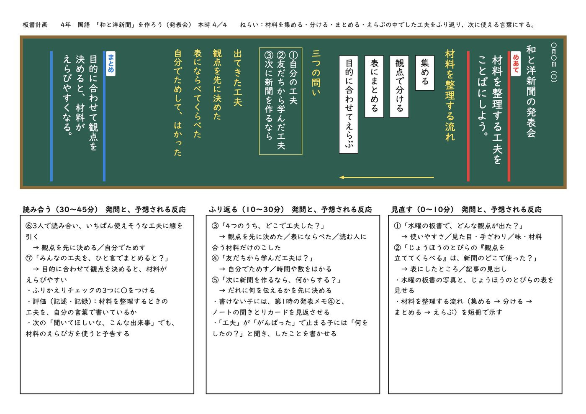
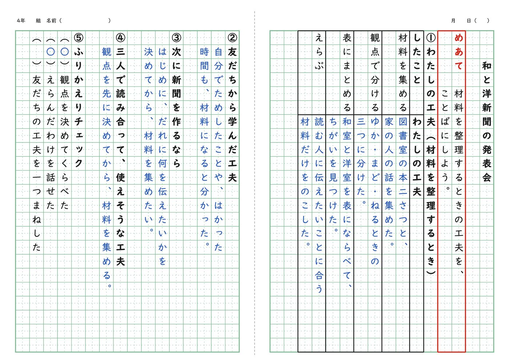
理科 空気と水をくらべてまとめる
11月12日（木） 2校時 第5時（全5時間） 教室
空気と水の結果をくらべて考察し、とじこめた空気はおしちぢめられるが、水はおしちぢめられないことを、両方の結果をもとに説明する。
| 0〜5分 | 前の時間の「ちぢむと思ったのに」から入る。前の時間の吹き出しを指さす。 |
| 5〜12分 | 空気と水の結果を表にならべる。くらべる表（A3）を黒板にはり、子どもに数を書きこませる。 |
| 12〜30分 | 考察を書き、発表して、まとめる。考察の型で書く（空気は、おすと（ ）。水は、おすと（ ）。だから…）。 |
| 30〜40分 | 身の回りの物で考える。実物を見せる。1人1つ、理由をノートに書く。 |
| 40〜45分 | 次の問題を見つける。出た言葉を板書に残す。11/16の「物の体積と温度」第1時は、この言葉から始める。 |
評価 思◎：空気と水の両方の結果を引いて、ちがいを考察して書いている（ノート）。片方だけはC、両方を引いて書けていればB、身の回りの物の理由まで説明できていればA。
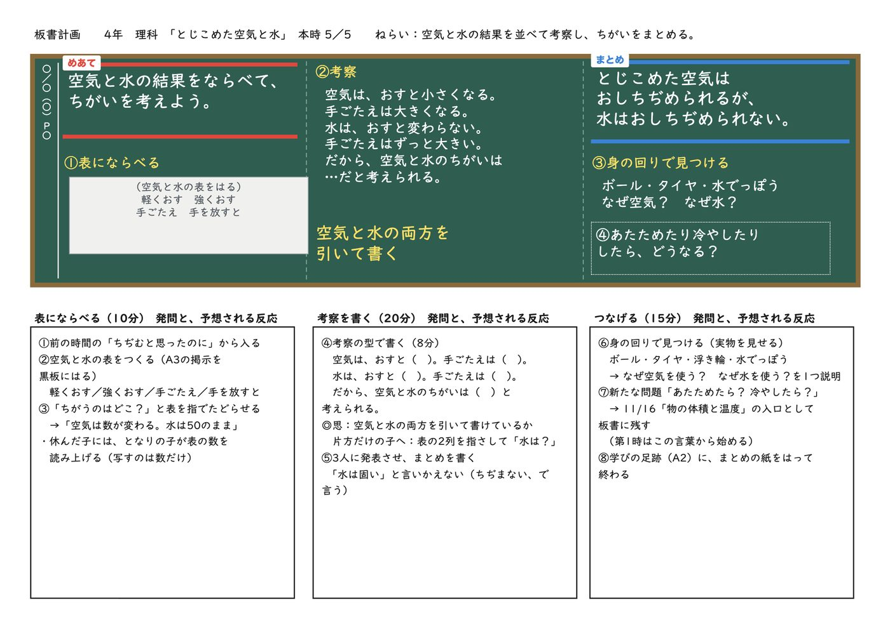
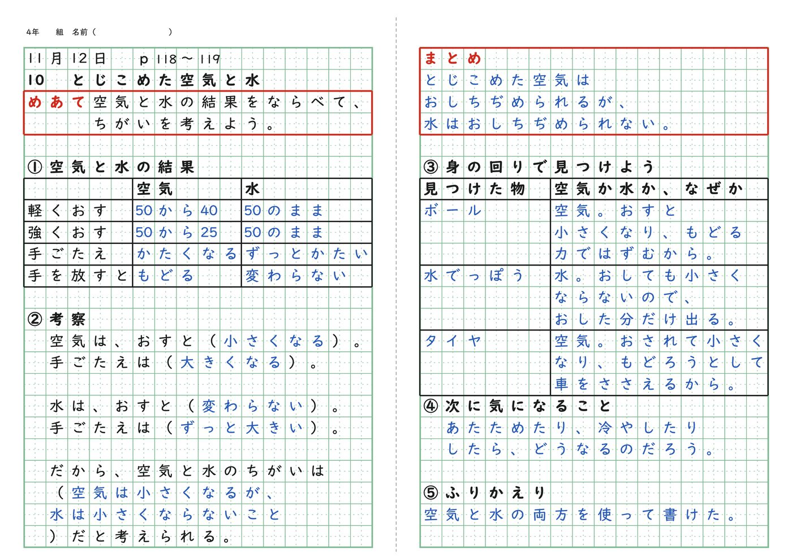
算数 積の見積もり
11月12日（木） 3校時 第6時
かけられる数もかける数も上から1けたのがい数にしてから計算すると、積をかんたんに見積もれることに気づく。
| はじめ（8分） | 「売り上げは約何万円？」と問い、筆算はたいへんだから、がい数にすればよいことに気づかせる。「どの位までのがい数にする？」 |
| 考える（25分） | 上から1けたのがい数にしてかける。0が多くてまちがえそうなので、0をのぞいてかけてから、0の数をつける。電卓でくわしく計算し、ほぼ同じことを確かめる。 |
| まとめる（12分） | まとめ「かけられる数もかける数も、上から1けたのがい数にしてから計算する」。練習とふりかえり。 |
評価 かけられる数とかける数を上から1けたのがい数にして、積を見積もっている（ノート・練習）。
つまずきと手立て 0の数をまちがえる。0をのぞいた数をかけてから、0がいくつあるかを指でおさえて数えさせる。
板書計画は、教科書の問題などが入るので手元のPDFで見ます。
ノートの記入例は、教科書の問題などが入るので手元のPDFで見ます。
図工 仕上げて、工夫を伝え合う
11月12日（木） 4・5校時 計画の6時間に続く2時間（仕上げと鑑賞）
細かいところをかき足して仕上げ、友だちの表し方の工夫を見つけて伝え合う。
| 仕上げ（4校時） | 細かいところをかき足して仕上げる。乾かす場所に置く。 |
| 鑑賞（5校時の前半） | となりや班で作品を見合い、言葉から感じたことをどう表したかを伝え合う。 |
| ふりかえり（5校時の後半） | 工夫したところを書く。片づけ。 |
評価 言葉から感じたことをもとに、表し方を工夫している（作品・ふりかえり）。
つまずきと手立て 仕上がりに差が出る。仕上がった子は鑑賞カードを先に書き、友だちの作品を見て回る。
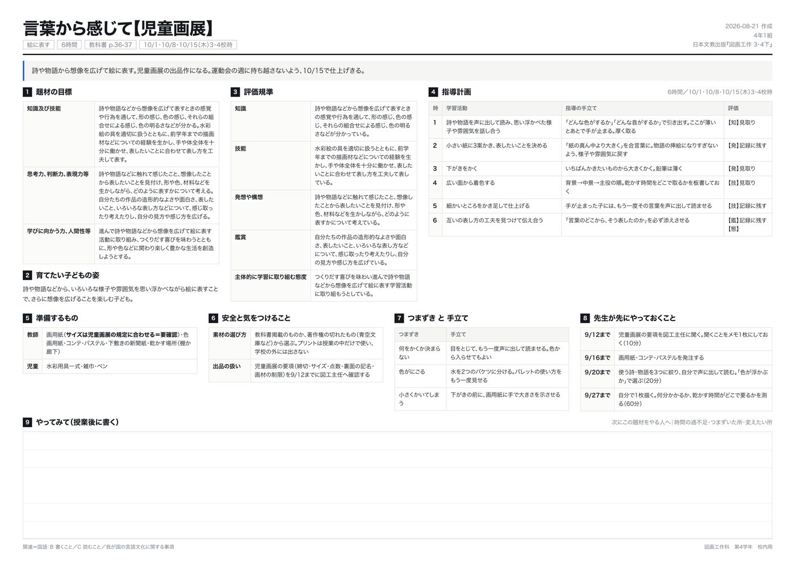
11月13日（金）
秋の遠足（4時間）。下校 13:30| 1 | 秋の遠足 水筒・リュック・ハンカチ・お手ふき・しき物・お菓子・ティッシュ・ごみ袋。赤白ぼうし |
|---|
朝のうちに
- □ 遠足：人数確認、救急セット、持ち物（水筒・リュック・ハンカチ・お手ふき・しき物・お菓子・ティッシュ・ごみ袋・赤白ぼうし）
授業中に記録すること
- □ 国語の次の単元「聞いてほしいな、こんな出来事」の材料になる場面を、子どもの言葉で1つメモしておく
放課後・その日のうちに
- □ 13:30下校のあと：来週の準備。理科「物の体積と温度」第1時（試験管を手でにぎる）
- □ 週のふりかえり：理科の時数（全5時間）と、社会のテストの結果を記録する